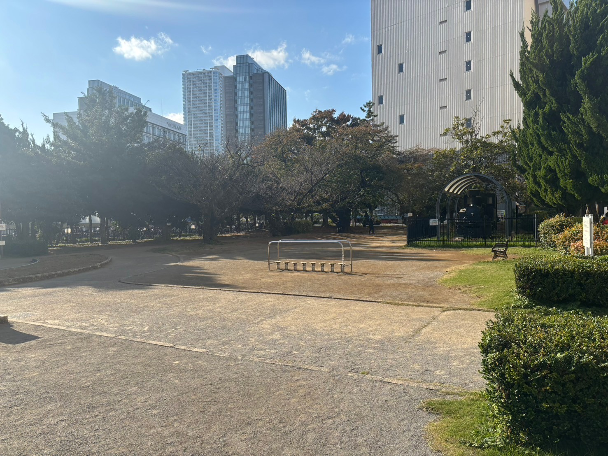
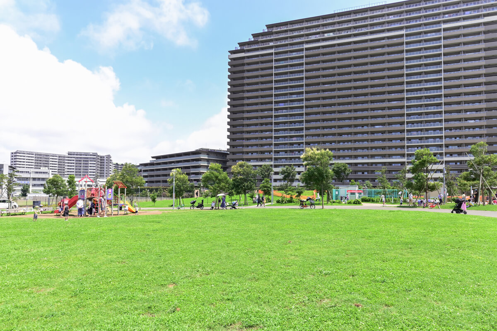

津田沼の保育園・小学校紹介
トップページに戻る
津田沼1丁目公園

敷地はそれほど大きくはありませんが、自然と憩いのスペースが融合した、落ち着いた雰囲気のある場所です。
滑り台やブランコ、砂場など、子どもたちが安全に遊べるように配慮された設計になっています。
また、ベンチも設置されており、散歩や軽い運動の途中に一息つける場所としても利用されています。
住所：〒275-0016 千葉県習志野市津田沼1丁目4
アクセス：津田沼駅南口から徒歩5分
谷津奏の杜公園

住宅街の中にあり、地域住民にとって日常の癒しや憩いの場として親しまれています。
公園内は広々とした芝生広場が広がっており、ピクニックやキャッチボールなど、のびのびとしたレクリエーションが楽しめます。
また、子ども向けの遊具エリアも充実しており、滑り台やアスレチック遊具で子どもたちが元気に遊ぶ姿が見られます。
水遊びができるじゃぶじゃぶ池もあり、夏場には子どもたちに大人気です。
住所：〒275-0028 千葉県習志野市奏の杜2丁目12
アクセス：JR総武線津田沼駅より徒歩約9分
モーリーファンタジー津田沼店

店内にはさまざまなアミューズメント機器やゲーム、遊具が揃い、子どもから大人まで幅広い年齢層に人気があります。
親子連れに特に人気で、雨の日でも気にせず遊べるため、地元の家族にとって欠かせない遊び場です。
施設内には、大型のふわふわ遊具やミニアトラクション、クレーンゲームやメダルゲームなどが充実しており、小さな子どもたちでも楽しめるように設計されています。
住所：〒275-0016 千葉県習志野市津田沼1丁目23−1 イオンモール津田沼店 3階
アクセス：津田沼駅北口から徒歩10分
津田沼の保育園・小学校紹介
トップページに戻る